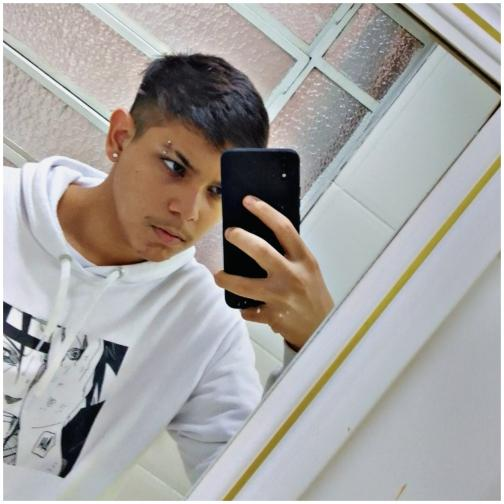
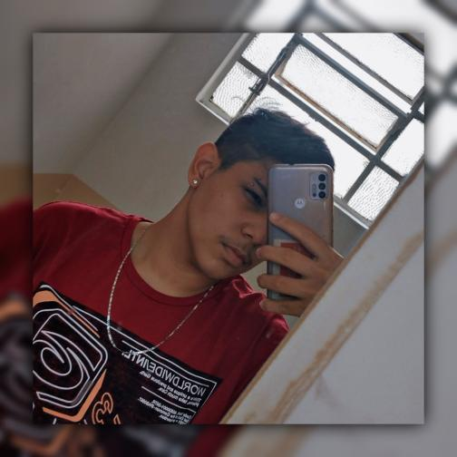

Itachi nasceu no Clã Uchiha, sendo o filho mais velho do líder do clã, Fugaku Uchiha e sua esposa Mikoto Uchiha. Quando ele tinha apenas quatro anos, Itachi já havia testemunhado a perda de muitas vidas devido à Terceira Guerra Mundial Shinobi, que o traumatizou emocionalmente e o fez se tornar um pacifista..

Este paradrafo não é vermelho
vic vic comedor de casadas

A gostosinha do Milton
